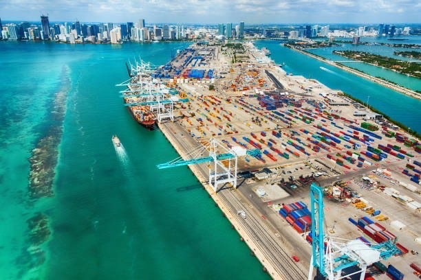
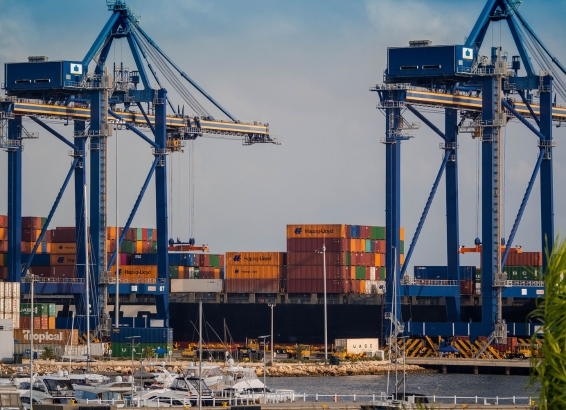
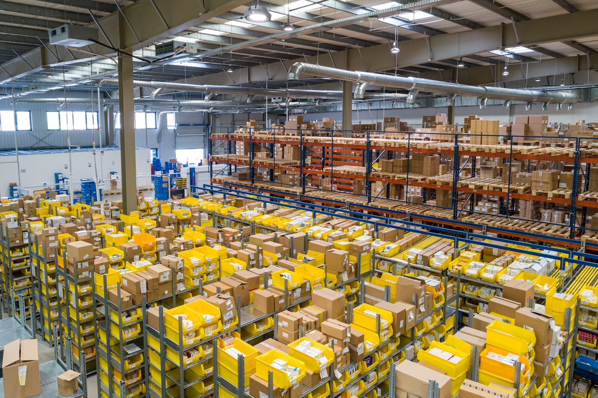
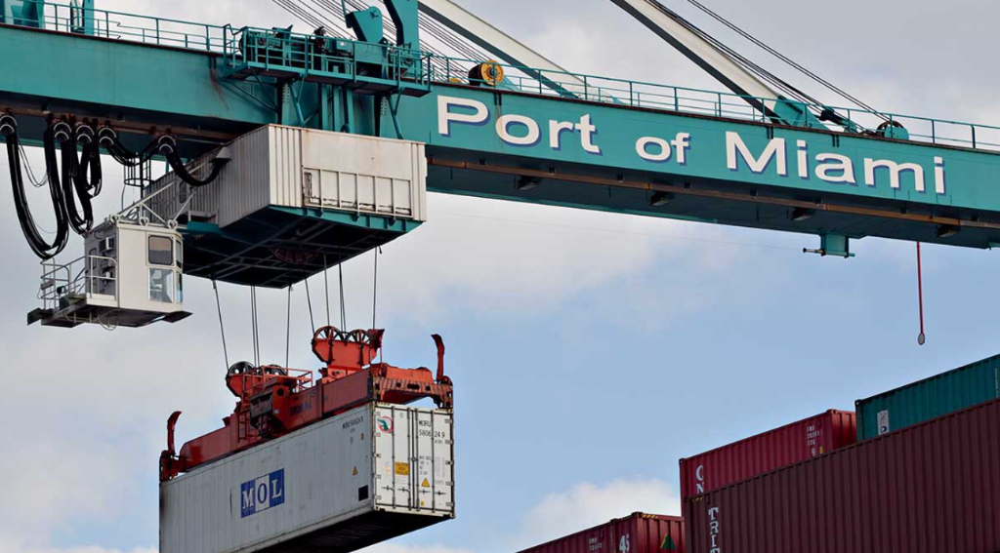
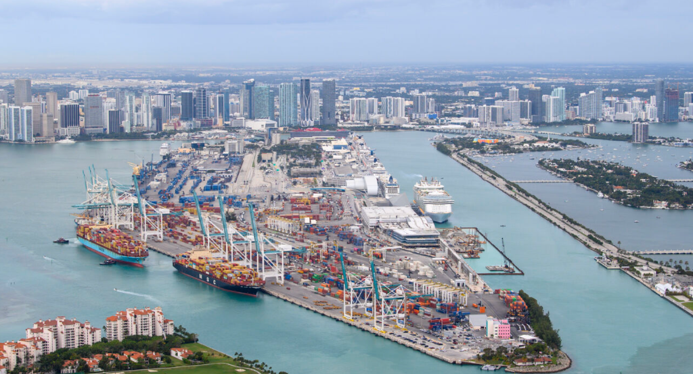

Procura Industrial y Soluciones Globales de Suministro
Agente de compras en Estados Unidos que conecta fabricantes globales con clientes industriales, de infraestructura y del sector público en América Latina.
Quiénes Somos
Su agente de compras y representante industrial estratégico en Estados Unidos.
Desde 2007, SAMANDHEL CORP ayuda a empresas a acceder a equipos de alta calidad, proveedores confiables y apoyo coordinado de exportación para proyectos en América Latina. Operamos como socio práctico desde la búsqueda hasta la entrega, alineando requisitos técnicos, tiempos y objetivos del proyecto.
- Capacidad de abastecimiento en Estados Unidos, Alemania, España, Italia, Suecia y Brasil
- Relaciones con proveedores para proyectos industriales y de infraestructura
- Ejecución integral desde la compra hasta la entrega

Qué Hacemos
Soporte integral para proyectos industriales y de infraestructura.
Servicios
Procura, suministro, logística y representación bajo un proceso coordinado.
Servicio
Procura y Abastecimiento Industrial
Identificación de proveedores, abastecimiento técnico, apoyo de compra, negociación y consolidación de proveedores para proyectos industriales y de infraestructura.
- Identificación y evaluación de proveedores
- Abastecimiento técnico según especificaciones
- Negociación y compra
- Consolidación de proveedores

Servicio
Suministro y Distribución de Equipos
Bombas, motores, equipos electromecánicos, válvulas, instrumentación y sistemas para operaciones industriales.
- Bombas, motores y equipos electromecánicos
- Sistemas industriales para infraestructura y operaciones
- Repuestos y componentes MRO
- Coordinación y seguimiento con proveedores

Servicio
Logística y Gestión de Exportación
Coordinación integral desde la consolidación de órdenes hasta documentación de exportación, flete y apoyo de entrega.
- Consolidación de órdenes
- Documentación de exportación
- Coordinación de flete
- Apoyo de entrega al destino final
Servicio
Apoyo de Proyectos y Representación
Soporte técnico y comercial para licitaciones, coordinación de proveedores, seguimiento de proyectos y representación comercial.
- Guía técnica
- Apoyo en licitaciones y compras
- Coordinación de proveedores
- Seguimiento continuo de proyectos

Productos
Equipos industriales, componentes de infraestructura hidráulica, repuestos MRO y suministro agroindustrial.
Apoyamos procura, coordinación de exportación y entrega según los requisitos del proyecto.
Industrias
Sectores de enfoque en América Latina.
Infraestructura Hidráulica y Agua
Soluciones para gestión y distribución de agua, incluyendo bombeo, control de inundaciones, agua potable, aguas residuales y transferencia.
Petróleo y Gas
Equipos industriales y sistemas de manejo de fluidos para producción, procesamiento y operaciones.
Gobierno y Sector Público
Apoyo para proyectos de infraestructura y procesos de compra con atención a requisitos técnicos y operativos.
Sector Privado y Construcción
Abastecimiento y entrega confiable de equipos y materiales para contratistas, desarrolladores y operadores industriales.
Agroindustria y Commodities
Procura, coordinación de exportación y entrega de materias primas agrícolas, productos procesados y commodities.
Mantenimiento y MRO
Repuestos y componentes para reducir tiempos de parada y mantener el rendimiento operativo.

Experiencia
Trayectoria en sistemas hidráulicos, suministro de infraestructura y equipos industriales.
SAMANDHEL ha apoyado proyectos industriales y de infraestructura en América Latina con enfoque en sistemas hidráulicos y suministro de equipos.
- Sistemas de bombeo de alta capacidad para control de inundaciones y transferencia de agua
- Motores industriales y equipos electromecánicos
- Apoyo de procura para proyectos de infraestructura
- Suministro de equipos para tratamiento y distribución de agua
¿Necesita un socio confiable de procura industrial?
Cuéntenos qué necesita. Podemos ayudar a identificar proveedores, coordinar requisitos de compra y apoyar la entrega.
Contacto
Conversemos sobre su Proyecto
Si tiene un proyecto o requerimiento, SAMANDHEL está listo para apoyarlo con abastecimiento confiable y ejecución eficiente.